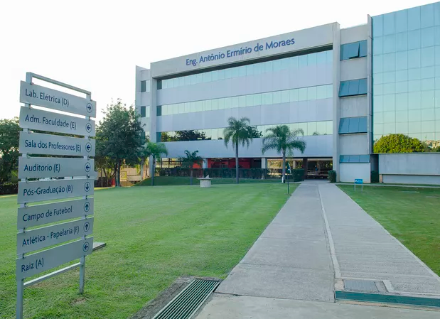
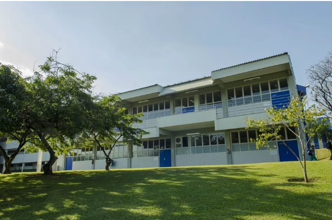

Explore Nossos Prédios
🏛️ Explore os Espaços da FACENS! Na FACENS, cada prédio foi pensado para transformar sua experiência acadêmica em algo único, desde salas de aula modernas até laboratórios equipados com tecnologia de ponta, tudo aqui foi planejado para oferecer o melhor ambiente de aprendizado possível.
💡 O campus conta com centros de inovação, espaços colaborativos, biblioteca completa, áreas de descanso e muito mais. Tudo isso em um ambiente sustentável e conectado com o futuro da educação.
🎓 Não é só estudar — é viver a FACENS! Aqui, você aprende, cria, inova e faz parte de uma comunidade que vive a tecnologia, conhecimento e crescimento pessoal.
Prédio A

O Prédio A da FACENS é um dos principais polos acadêmicos voltados para a área de Tecnologia da Informação, sendo amplamente utilizado por alunos dos cursos de Análise e Desenvolvimento de Sistemas, Engenharia da Computação e áreas correlatas. Com dois andares, incluindo o térreo, sua estrutura abriga diversas salas de aula modernas e bem equipadas, além de laboratórios especializados que proporcionam um ambiente ideal para a aplicação prática do conteúdo aprendido.
Um dos destaques do Prédio A é a presença da Central de Ajuda de TI, um espaço estratégico dedicado ao suporte técnico para estudantes e colaboradores da instituição. Esse serviço garante agilidade na resolução de problemas relacionados à infraestrutura tecnológica, reforçando o compromisso da FACENS com a inovação e o bom funcionamento das atividades acadêmicas. O prédio é, portanto, um ponto essencial para o desenvolvimento prático e teórico das disciplinas ligadas à tecnologia.
Prédio B

O Prédio B da FACENS é um espaço acadêmico versátil que atende a uma ampla gama de cursos da instituição. Com dois andares, incluindo o térreo, ele abriga salas de aula modernas e climatizadas, projetadas para proporcionar conforto e eficiência no processo de ensino-aprendizagem. Sua estrutura foi pensada para oferecer um ambiente funcional, com tecnologia integrada e excelente acústica, favorecendo a concentração e o desempenho dos alunos em diferentes áreas do conhecimento.
Por atender a cursos variados, o prédio é frequentado por estudantes de múltiplas disciplinas, tornando-o um ponto de encontro dinâmico e colaborativo dentro do campus. As salas são equipadas com recursos multimídia e mobiliário ergonômico, que contribuem para a realização de atividades teóricas e práticas de forma eficaz. O Prédio B destaca-se como uma base essencial para o cotidiano acadêmico, combinando infraestrutura de qualidade com um ambiente propício ao aprendizado coletivo.
Prédio C
O Prédio C da FACENS é um dos centros mais modernos e tecnológicos da instituição, voltado principalmente para os cursos da área de TI.
Com três andares mais o térreo, o prédio abriga salas equipadas para disciplinas como Fundamentos de Ciência de Dados, Arquitetura de Dados e Desenvolvimento de Software, sendo um espaço essencial para alunos de Análise e Desenvolvimento de Sistemas, Engenharia da Computação e áreas relacionadas.No térreo, destacam-se os laboratórios de informática, espaços de pesquisa e uma completa área de impressão 3D, onde os estudantes têm contato direto com tecnologias de prototipagem e inovação.
No térreo, destacam-se os laboratórios de informática, espaços de pesquisa e uma completa área de impressão 3D, onde os estudantes têm contato direto com tecnologias de prototipagem e inovação.
Esses ambientes promovem o aprendizado prático e o desenvolvimento de projetos interdisciplinares desde os primeiros semestres. Além do uso acadêmico, o prédio também é amplamente utilizado para eventos como workshops, hackathons e palestras técnicas, sendo um ponto de encontro entre alunos, professores e empresas parceiras. Com estrutura ampla, climatizada e conectada, o Prédio C representa a integração entre ensino, inovação e mercado de trabalho, oferecendo uma base sólida para a formação de profissionais capacitados e criativos.Prédio D

O Prédio D da FACENS é um espaço acadêmico multifuncional que contempla tanto salas de aula amplas quanto ambientes voltados à área da saúde. Com um único andar, o prédio se destaca por sua organização eficiente e acessibilidade, oferecendo uma infraestrutura que atende desde aulas teóricas de cursos diversos até atividades práticas realizadas em seus laboratórios especializados.
Além das salas confortáveis e bem equipadas, o prédio conta com laboratórios voltados à simulação e ao estudo de áreas da saúde e ciências biomédicas, proporcionando aos alunos experiências práticas fundamentais para sua formação. Essa integração entre ensino teórico e prático torna o Prédio D um polo essencial para diferentes cursos da instituição, promovendo aprendizado de forma dinâmica e completa.
Prédio E
O Prédio E da FACENS é um espaço acadêmico voltado às áreas da saúde, abrigando cursos como Medicina, Biomedicina e Odontologia. Com três andares além do térreo, o prédio é amplo, moderno e equipado com infraestrutura de alto nível. No térreo, estão localizados diversos laboratórios de simulação realística, onde os estudantes têm a oportunidade de praticar procedimentos médicos e odontológicos em ambientes que simulam situações reais da área clínica, utilizando tecnologias de ponta para garantir um aprendizado prático e seguro.
Nos andares superiores, o prédio conta com salas de aula climatizadas, laboratórios especializados em anatomia, microbiologia e bioquímica, além de espaços voltados para pesquisa e estudos interdisciplinares. O ambiente favorece a formação técnica e humanizada dos futuros profissionais da saúde.
Prédio F
O Prédio F da FACENS é dedicado aos cuidados com a saúde da comunidade acadêmica, funcionando como o ambulatório da instituição. Com um espaço projetado para acolher e atender com agilidade, o prédio oferece serviços de primeiros socorros, apoio médico emergencial e encaminhamentos, sendo fundamental para garantir o bem-estar de alunos, professores e colaboradores.
Além do atendimento emergencial, o local também realiza acompanhamentos preventivos e está preparado para atuar em diferentes situações de saúde que possam ocorrer no ambiente universitário. A presença de profissionais capacitados e estrutura adequada reforça o compromisso da FACENS com a segurança e cuidado de todos que circulam pelo campus.
Prédio G
O Prédio G da FACENS é o espaço dedicado à alimentação e convivência dos alunos, professores e colaboradores da instituição. Funcionando como o refeitório principal do campus, ele conta com uma ampla área equipada com diversas mesas e cadeiras, proporcionando conforto e praticidade para quem deseja almoçar, jantar ou apenas fazer uma pausa durante a rotina acadêmica.
Além do restaurante que oferece refeições completas e balanceadas, o prédio também possui uma cafeteria moderna e aconchegante, ideal para um café rápido, lanches ou momentos de estudo mais informais. O ambiente é pensado para promover a integração entre os estudantes e garantir uma experiência mais agradável dentro da vida universitária.
Prédio H
O Prédio H da FACENS é o espaço dedicado à biblioteca da instituição, oferecendo um ambiente completo para estudo, pesquisa e leitura. Com um acervo extenso e atualizado, a biblioteca conta com livros acadêmicos de diversas áreas do conhecimento, incluindo engenharia, tecnologia, saúde e administração, além de obras literárias e materiais para leitura recreativa.
O local é equipado com computadores disponíveis para uso dos alunos, permitindo acesso a bancos de dados, periódicos digitais e atividades online. Com uma estrutura confortável, climatizada e silenciosa, o Prédio H é ideal para quem busca um espaço de concentração, sendo um dos pilares do suporte acadêmico da FACENS.
Prédio I
O Prédio I da FACENS é um dos polos de inovação tecnológica da instituição, dedicado ao ensino e desenvolvimento de projetos nas áreas de Inteligência Artificial e Tecnologia da Informação. Com dois andares bem estruturados, o prédio abriga diversas salas de aula voltadas a disciplinas como fundamentos de IA, automação de sistemas, aprendizado de máquina e gerenciamento de projetos em T.I., oferecendo uma base sólida e atualizada para os alunos que desejam se aprofundar nesse setor em constante evolução.
Além das salas teóricas, o prédio conta com modernos laboratórios de informática equipados com computadores de alto desempenho, ideais para testes, simulações e desenvolvimento de software. Outro diferencial é a área de lazer ao lado do prédio, com mesas e espaço ao ar livre, oferecendo um ambiente agradável para descanso, socialização e discussões informais entre os estudantes. Essa combinação de estrutura e foco tecnológico faz do Prédio I um espaço essencial para quem busca inovação, prática e troca de conhecimento no universo da T.I.
Prédio J
O Prédio J da FACENS é um espaço multifuncional voltado principalmente para atividades administrativas e de suporte acadêmico. Nele estão localizados setores essenciais como a Secretaria Acadêmica, o Departamento Financeiro, Atendimento ao Aluno e Coordenações de cursos, facilitando o acesso a serviços fundamentais para a vida acadêmica. Além disso, o prédio conta com salas de reunião e ambientes preparados para atendimentos individuais e coletivos, promovendo eficiência no suporte prestado aos alunos e colaboradores.
Mesmo não sendo voltado diretamente ao ensino em sala de aula, o Prédio J desempenha um papel estratégico no bom funcionamento da instituição. Sua estrutura moderna e organizada garante agilidade nos processos internos e acolhimento no atendimento aos estudantes. A localização central e o fácil acesso fazem dele um ponto de referência para quem busca informações, resoluções acadêmicas ou apoio administrativo durante a jornada universitária.
Prédio K
O Prédio K da FACENS está localizado em uma área mais reservada do campus, sendo ideal para atividades que exigem concentração e tranquilidade. Por estar um pouco mais afastado do fluxo principal, oferece um ambiente mais silencioso e menos movimentado, o que o torna um espaço estratégico para determinadas disciplinas, projetos ou atividades acadêmicas específicas.
Apesar de estar fora do centro do campus, o Prédio K continua tendo sua importância dentro da estrutura da instituição, acolhendo turmas menores, orientações de projetos e até algumas atividades administrativas. Seu posicionamento proporciona um clima mais introspectivo, ideal para momentos de foco e desenvolvimento intelectual.
Prédio L

🏢 Prédio L - O Centro de Inovação e Tecnologia da FACENS
O Prédio L é um dos espaços mais completos e modernos de toda a FACENS. Com três andares além do térreo, esse prédio impressiona tanto pelo seu tamanho quanto pela sua infraestrutura tecnológica de ponta. É o principal ponto de encontro para os cursos ligados à tecnologia e engenharia, reunindo diversas salas de aula equipadas para disciplinas como Análise e Desenvolvimento de Sistemas, Engenharia de Computação, Engenharia Mecânica, Arquitetura de Dados, Fundamentos de Ciência de Dados, entre muitas outras ligadas ao universo da inovação.
No térreo, o prédio abriga diversos laboratórios de pesquisa e salas com computadores de alto desempenho, proporcionando aos alunos um ambiente ideal para o desenvolvimento de projetos acadêmicos, estudos e experiências práticas. Esses espaços são fundamentais para promover a conexão entre teoria e prática, incentivando a aplicação real do conhecimento adquirido em sala.
Além disso, o Prédio L também é palco de eventos institucionais, workshops, feiras acadêmicas e encontros de tecnologia. Graças à sua estrutura ampla e versátil, ele se torna o cenário ideal para momentos de troca de conhecimento, networking e apresentações de projetos.
Seja para assistir a uma aula, participar de um evento ou desenvolver um projeto inovador, o Prédio L é, sem dúvidas, um símbolo da proposta educacional moderna e conectada da FACENS.